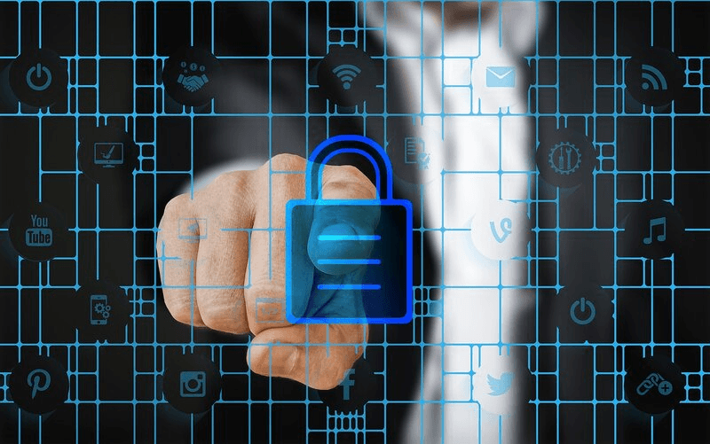

-
Tipos de seguridad informática
Los ciberataques van en aumento y se vuelven cada vez más sofisticados y difíciles de contrarrestar. Por ello, es sumamente importante que una empresa cuente con un área y herramientas de seguridad informática que le permitan confiar en que sus redes y operaciones están funcionando de manera segura y con posibilidades mínimas de sufrir algún ataque.
Una gran parte de los datos que resguarda una empresa es información confidencial, como propiedad intelectual, datos financieros, información personal u otros tipos de datos, para los que el acceso o la exposición no están autorizados.
Pese a esto, la transmisión de datos confidenciales se da a través de redes y otros dispositivos día a día. Por eso la seguridad informática es necesaria, pues se encarga de proteger esa información y los sistemas utilizados para procesarla y almacenarla.
Cada tecnología en la que se alojen entornos digitales de una organización debe tener alguna forma o medida de seguridad informática; por ejemplo, con las herramientas de monitorización web de HubSpot tienes una estructura y programación que ofrecen la protección adecuada.
Ninguna empresa está exenta de sufrir alguna amenaza que ponga que riesgo su información, seguridad, finanzas y reputación. Te compartimos aquellas acciones que los hackers o ciberdelincuentes suelen emplear más para lograr algún cometido.

Seguridad de red
La seguridad en la red se enfoca en la protección de la red de una empresa u organización, mediante medidas de protección que identifiquen y repelen amenazas externas, hackers, malware y virus.
Seguridad de datos
Este tipo de seguridad es fundamental, ya que sus acciones se centran en proteger los datos durante el proceso de recopilación y gestión de los mismos. Así se protege la información de la compañía, como los datos de los clientes, informes financieros y registros de empleados; por supuesto, uno de los pilares de la seguridad informática es la prevención de pérdida de datos.
Seguridad de aplicaciones
La seguridad informática de las aplicaciones empresariales es sumamente importante para que una organización opere de la mejor manera. Sus acciones se encargan de proteger las aplicaciones que usa una empresa, como el correo electrónico, la mensajería instantánea y los programas personalizados.
Seguridad de la nube
Este tipo de seguridad es más concreto, pero sus acciones abarcan muchas plataformas y software que operan en la nube. Busca la protección de los datos y aplicaciones alojados en la nube, incluyendo la seguridad de su infraestructura y los datos almacenados en ella.
Seguridad de la identidad
Esta tiene que ver con la protección de la identidad digital de los empleados y los clientes, incluyendo el control de acceso y la autenticación de usuarios, incluyendo el SSO.